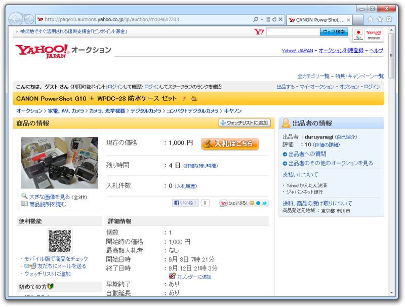

さよなら、Canon PowerShot G10
公開日：

Yahoo! プレミアムの料金が上がるみたいなので、そろそろ解約しようかな、と。そうでなくても、これを機に Yahoo! 離れがちょっとはあるかもしれない。ヤフオクするなら今のうちだな！
というわけで、オークションに出そうだそうと思っていてめんどくさくて先延ばしになっていた Canon PowerShot G10 を処分しました。落札価格は防水ケース付きで 27,000 円でした。思ってたよりちょっと高くてうれしい。
このカメラはたいていの設定がマニュアルで変えられるのがお気に入りでした。しかもダイアルで！ ダイアルのグリグリ感もちょうどよくて気持ちいいし、液晶のメニューがダイアル操作に合わせて変わるのもいい。撮るのも楽しいけれど、むしろ触ってて面白いカメラだったと思います。ただ、最近機種の高感度・高画質化をみるとちょっとスペック不足な面もあるかな……。後継機ではそこらへんも改善されてそうで、正直ちょっとほしいぐらい。
一方、今使っている Nikon 1 V1 は G10 とは対照的で、基本的には何もさせてくれないカメラ。でも、まぁ、それもいい。なぜなら、 G10 で楽しんでいたことを今は一眼レフカメラ（Nikon D300s）で楽しんでいるからです。まだまだ下手の横好きで恥ずかしいぐらいなのですけれどね。 V1 はそのへたっぴのサポート役なのです。
次はレンズを売るぞ！